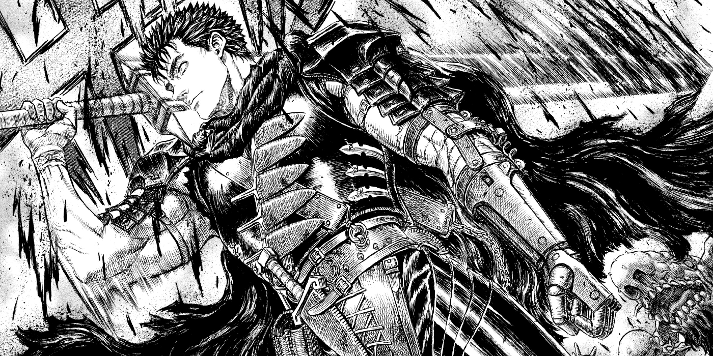
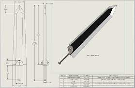

<!DOCTYPE html>
<html lang="pt-br"></html>

    <head>
        <meta charset="UTF-8">
        <title>My RPG Caracter</title>

        <style>
            body {
                color: rgb(255, 255, 255);
                background-color: rgb(51, 51, 51);
            }
            #guts {
                width: 100%;
                
            }
            h1 {
                padding-left: 20px;
                text-transform: uppercase;
                font-weight: bold;
                font-size: 22px;

            }
            h2 {
                text-align: center;
            }
            p {
                text-align: center;
            }
            h3 {
                text-align: center;
                padding: 20px;
            }
            #slr{
                width: 50%;
            }
        </style>
    </head>

    <body>
        
        <header>
            <h1>Zephyr</h1>
            <h2>Classe:Espadachin</h2>
        </header>
        
        <h3>Historia</h3>

        <p> Em uma terra distante, Zephyr, o espadachim de espadas longas e largas, vagava pelas sombras com um passado enigmático. 
           Seu olhar, frio como o aço de suas lâminas, escondia as cicatrizes de batalhas travadas em nome de segredos obscuros.</p>

        <p> Nascido em uma família nobre, Zephyr foi traído por aqueles em quem confiava. 
            Seus pais, envolvidos em tramas sinistras, foram brutalmente assassinados, deixando-o órfão. 
            Consumido pela dor e vingança, ele se entregou às artes mortais da espada, jurando levar justiça aos traidores que o haviam despojado de tudo.</p>
        
        <p>Em sua busca implacável, Zephyr cruzou desertos abrasadores e florestas sombrias, enfrentando monstros e mercenários. 
            Cada batalha moldava sua destreza com as espadas, mas também aprofundava as sombras que obscureciam sua alma. 
            Rumores falavam de um artefato ancestral capaz de revelar a verdade oculta por trás da traição.</p>

        <p>Ao alcançar as montanhas proibidas, Zephyr enfrentou um antigo guardião, provando-se digno de desvendar o segredo ancestral. 
            Ao tocar na lâmina lendária, visões do passado se desdobraram, revelando uma conspiração que ultrapassava gerações. 
            A verdade, entrelaçada com a traição, guiou Zephyr em direção a uma redenção sombria.</p>

        <p>Agora, marcado pelas revelações, Zephyr continua sua jornada, não apenas como um espadachim habilidoso, 
            mas como o guardião da verdade que emerge das sombras do seu passado. Seu destino entrelaçado com as espadas que carrega, 
            ele busca equilibrar a justiça e a escuridão em um mundo onde as linhas entre o bem e o mal são tão afiadas quanto suas lâminas.</p>

        <p style="font-size: 20px"><em>Perdido meio a escuridão da solidão, seu unico objetivo é <strong>sobreviver.</strong></em></p>

        
    </body>
</html>